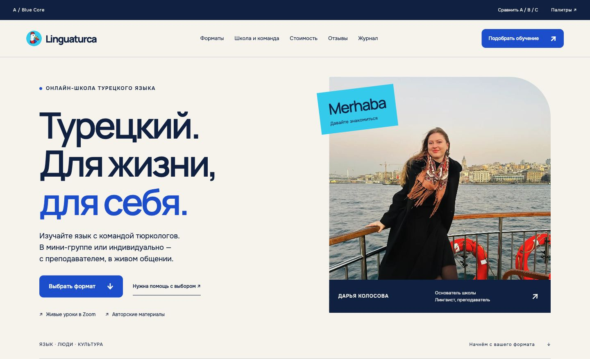

LINGUATURCA / АРТ-ДИРЕКШН НА СОГЛАСОВАНИЕ
Ближе к языку.
Ближе к Турции.
Слева — текущий Blue Core. Справа — новая итерация с повседневной Турцией, турецкими буквами и материалами школы. Только hero и три следующие секции.

Сохранили. Крупную типографику, асимметрию, ясный выбор формата, Дарью и команду. Синий из логотипа #0057D8 и cyan #00D2F2.
Усилили. Vapur как городская повседневность; I/ı и İ/i как узнаваемая и полезная типографика; культурные материалы школы; небольшой геометрический тюльпан.
На согласование. Направление графики и фотографий. Языковой пример — демонстрация подачи. Состав команды и авторство материалов предстоит подтвердить.
Паром: Tarik Kaan Muslu, CC BY-SA 4.0. Изображение показано в кадрирующей рамке. Полные источники — в новом макете и README. Все снимки локальные.